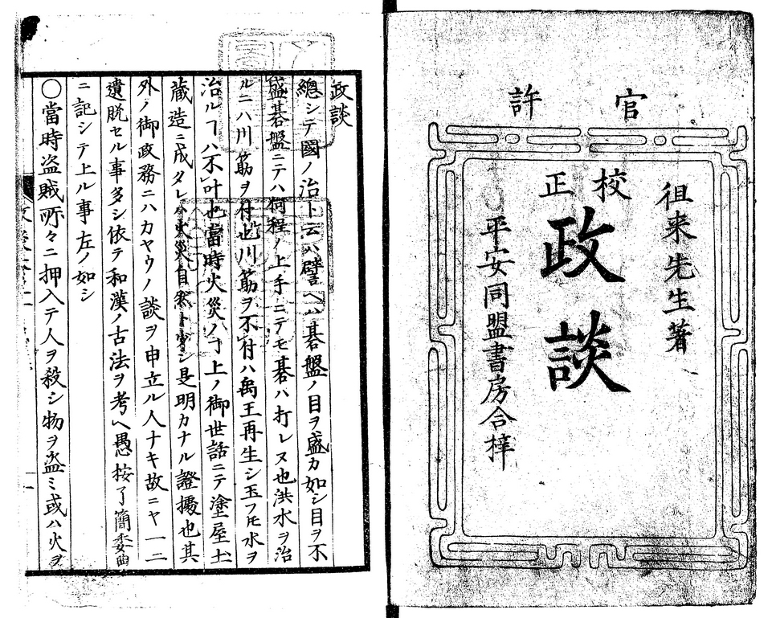
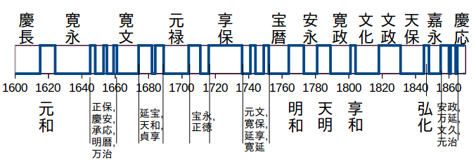

荻生徂徠と車善七伝説¶
明治初期、司法省は民法作成の基礎として、国内各地の法習慣を調査して「全国民事慣例類集」（明13.7）にまとめた。その第一章「身分ノ事」は穢多・非人について以下のように記す。
穢多・非人は人民中の最賤族にして殆んど禽獣に近き者なり.
弊牛馬の皮を剥ぎ皮履鞁鼕等を製造するを職業とするを以て穢多の名あり.
行斃人の埋葬,死刑人の取片付,乞食人の取締等人の賤悪する職業を為すを以て非人の名あり.
穢多非人各種族を異にし互に嫁娶交際を為さず.
非人は穢多の支配に属し其権大に劣る者なれども,
足洗と称し多少の金を出せば平民籍に入る事を得る習慣にて平民より待遇する所に於ては穢多の上位にあり.
穢多は戸内に入る事を許さず,水火を授受する事を忌み,其製造品を買入るとき其価額を清算して投與し彼より釣銭を受るを良しとせず.
非人は職業の都合により雇入れて使役し或は水火を受授する事あり.
皆各戸籍を異にし穢多人別帳,非人人別帳と称し別帳を作り官へ差出す例にて,
穢多の菩提寺は真宗に限る事なり.
其中身代厚き者ありて耕地を所有し農業を為す事あれども農民に歯する事を得ず.
(* 原文はかたかな表記、句読点なし。一字(鼕?)不明。)
同書には、さらに、国内各地域の歴史的事情によって扱いが違う諸点を記してある。これらは維新前の状況を要約しているだけで、時代によってもまた変化したはずである。ともあれ、穢多は世襲の職能集団というのに近くて、宗教上の理由等から不当に賤民視された人々である。上にはくわしくないが、行政の都合上、穢多の支配下に置かれた職能集団がいくつもある。しかし、その範囲・種類は時代によって異なる [1] 。
非人の多くはそれぞれの事情により平民の社会から落ちたまま這い上がれなかった者たち、あるいはその末裔である。幕府は元禄〜享保頃から統制のために、また特定の仕事を負わせるために、江戸の乞食を「非人」としてひとくくりにしてきた。それは、あるときを境に明瞭にそう決まったというのでもない。
荻生徂徠は「政談」のなかで幕府の安直な対応をこう批判している。
乞食、非人などと云ふ者は詰るところ頼りにする者がなく、云はば天下の窮民と云へる。
(中略)
今の世の乞食、非人の類は世間の堕落した傾向と、せち辛くなった状態から生じたものであるとすれば、
責任は上の政治が下々に及ばないと云ふ點にあると云はなければならない。
故に何等かの方法で彼等を救済するのは當然であろう。然るに實際は何等同情ある處置も取らず、
簡單に善七の手下として事が濟んだと思ってゐる。
(中略)
彼等は平民とは全然異なった境遇に居り、乞食の仲間で如何な事が起つても、平民には全く知られないようになってしまった。
(中略)
江戸市中に平民と全然異つた境遇に居る者が非常に多いと云ふことは、外国人を江戸市中に多数放したようなもので、
この上もない危険である。
( 大日本思想全集. 第7巻, 昭和6, 荻生徂徠集「政談」。現代語訳をそのまま抜粋。)
{kind=link}
徂徠(寛文6[1666]～享保13[1728])は晩年のこの意見書(享保12[1726]完)において、この増えすぎて統制不能になった無形の集団がなにを仕出かすかしれないことを危惧している。というのも、初代の車善七が家康を狙ったのがその先例だというのである。
車善七¶
正保二年(1645年)、浅草鳥越神社周囲を武家地とすることになり、鳥越を拠点としていた弾左衛門配下の穢多の集落が、日本堤の北東側の今戸-山谷辺に移された。車善七を頭とする乞食の集団も鳥越におり、同じころに追いだされたものと推定されている。記録にあるかぎりでは、善七配下の集団は寛文七年(1667)初めには、新吉原裏手に住みついている。実際は新吉原建設(明暦三年、1657)の前後から、あるいは地の利を考えれば、さらに以前からその附近に小屋掛していたとして不思議はない。
「車善七」は浅草の乞食頭の代々の世襲名である。その由緒には、下表のように二つの説がある。一つは、天保十年(1837)に子孫の車千代松の名で町奉行に提出されたもの、もう一つは、
| 出典 | 内容 | 考察 |
|---|---|---|
| 天保十年(1837)九月、車千代松の名で出された由緒書 | 車善七は三州あつみ村出生、天正十八年(1590)ころ浅草大川端あたりで小屋掛けしていた。慶長十三年(1608)に北町、南町両奉行から「非人頭」に任命され、浅草元鳥越に五百坪の居地をもらった。元鳥越の土地が御用地として取り上げられたため、寛文六年(1666)に新吉原裏に替地をもらった。しかし、当時の文書は焼失して残っていない。 | 参考: 「江戸の非人頭車善七」 塩見鮮一郎著 (河出文庫）。なお、天保撰要類集第八十五両溜之部の天保十亥年九月記事としては「非人名目之儀」についての千代松の書付のみがあり、千代松由緒書は載っていない。非人名目之儀の書上では、非人呼称の由来について自分は知らないと言っている。 |
| 江都官鑰秘鑑 | 慶長庚子の乱のとき佐竹義宣の家老の車野丹波守が石田三成方につくことを勧めたが、佐竹義宣はこれを採用せず、後に車野は処刑された。車野の一子、善七郎は家康を恨み、庭男となって江戸城に出入りし家康の命を狙うが、捕らえられてしまう。家康に一命を助けられた善七郎は自害を望む。家康は怒って、命を拒むなら汝の九族を斬ると言う。善七郎はこのうえは人界を辞して、乞児として生涯を送ることを願う。家康は後に有司に命じて「飢寒をまぬかれしむ」ために善七郎を「乞児の徒の首領」とした。以来、車野善七郎は名を車善七と改め、連綿と続いている。 | この説の位置づけについては、下記参照。 |
第二説が無稽だからといって必ずしも捨てられない理由を、改正補訂
非人頭車善七由緒の事は享保年中糺の節同人より書上たれども委しからず
之は先祖の姓氏歴然たりといへども 証据の書物なく書上難きゆへ書出さゞるにや
又自身にも其由緒は実に知ざるにや
明歴の比より諸用を達し其後溜地等下され 品々相勤めし事のみ
享保十巳年八月三日町奉行中山出雲守大岡越前守へ書上に及びたる趣どもを粗左に記す.
又官鑰秘鑑に善七の由緒は詳しく記してありといへども
糺の節善七より書出さざれば虚実は不分明なれども 先祖は一且徳川家を恨みし儀に付
申立るを恐れ先祖の由緒姓氏を顕さず 只諸用を勤めたるのみを態と書上たるにや
其程も計りがたけれど 善七の書上ざるを虚談とも極難きに付
江都官鑰秘鑑に由緒を著したる趣 世俗の云伝えと符合するゆえに 今爰に記し置ものなり.
すなわち、なぜ当代の善七側の書上に先祖由緒が記されなかったのかを不思議がり、「地方凡例録」では「江都官鑰秘鑑」の情報で補うことにした。
その「江都官鑰秘鑑」では、 善七由緒について、「
善七伝説が幕臣のあいだで早くから広まっていたのは、この話が家康の「広大不測の神慮」（徂徠「政談」）を象徴していたからである。徂徠は秘鑑とは少し違った話をとっている。
既ニ善七ト云者ノ先祖は景勝ノ家来ニ車丹波ト云モノ成シカ御草履取トナリテ東照宮ヲ
ネラ匕奉リ己カ家来ヲハ皆江戸ヘ連来リ乞食ノ中ヘ入置シヲ事顕タル時東照宮広大不測
ノ神慮ニテ御免有テ乞食ノ頭ト成タルト申傳ル也
此等ノ類ハ治ノ道ニハ深恐気遣ヘキコト也
徂徠「政談」
ここで車丹波を上杉景勝の家来としているのは、慶長五年(1600)の伊達政宗との福島城防衛戦において車丹波が景勝のもとで戦ったためであろう( 家忠日記増補追加 , 寛文5[1665]頃)。その頃にはすでに車丹波は事実上、佐竹とは袂をわかっていたとの認識と思われる。なお、「
関ヶ原後の慶長七年に佐竹が水戸から秋田に転封された。53万石から20万石への減封となった。そのため、水戸には多くの浪士がのこされた。「家忠日記増補追加」によると、車丹波、その子の所(新?)左衛門尉、馬場和泉守など五名が首将となり、浪士をつのって水戸城奪還をくわだてる。計画は露見し、守りを固めた水戸城に突入した車丹波らはみな捕らえられる。首魁五人はそののち斬首された。この車一揆の前後の詳細は軍記や史誌によって異なる。「新編常陸国誌」 [4] などでは、車(車野)は磔にされたとする。「常山紀談」（明和七年[1770]）は、さらに、車野丹波を磔にしたとの報をあとから聞いた家康は、その酷い仕打ちを歎いたとしているが、このあたりは講談的な脚色も感じられる。
徂徠の記述で注目されるのは「申傳ル也」という部分で、幕府内の申し伝えだと書いている。「政談」が吉宗のために書かれたことを考えれば、これが幕府内の常識だったということを意味する。
徂徠のものも含めて、これらの説から浮かびあがるのは以下のようなことである。
- 関ヶ原後に江戸で家康の命をねらう浪士、あるいは浪士集団があった。一つとは限らない。
- 彼らをとらえたとき、家康はあえて処刑せず、また、「秘鑑」にあるように、名誉ある自死という選択肢もとりあげてしまった。そのうえで、より良い対応法を考えた。
- 彼らはすでに乞食の態だったので、飢寒をしのぐための土地を与え、首魁格のひとり（ 車善七と名乗ったが、常陸を拠点とした車氏との関係は不詳 ）を頭として、彼等の動静を把握できるようにした。
救けたのは単に温情なのではない。また、救けられたからといって、忠誠をちかったのでもない。
吉原（元吉原）初代名主の庄司甚右衛門は小田原北條氏に仕えた武士の子だったが、生前その事実を子どもには告げなかったと言われている [5] 。初代車善七も同様に子孫には自身の出自を明かしていないかもしれない。自ら武士を離れ、遊女屋や乞徒の群れにはいることを選んだ者たちが、子どもに向かって未練がましく自分の出自を語っただろうか。
この類の者たちのなかで、いずれまた乱世になると期待した者は乞徒を、いやでも平和が続くとあきらめた者は遊女屋を選んだかもしれない。いずれにしても、彼らは乞徒や遊女屋の世界を自身のためにあたらしく作りだす以外の生き方をもたなかった。庄司甚右衛門の吉原遊廓がそれまでの遊郭とはちがうように、車善七の乞徒集団も乞食の群れとはちがうものとして作られた。
元仙台藩士で明治の漢学者、岡千仭は幕府の秘書を読み、抄録をとったと言われる。その著作、「捗史偶筆」は初代の善七について「江都官鑰秘鑑」等にはない以下の記事で結ぶ。
其死に一小冊を出す。人に示して曰く。吾れ平生乞徒の用いる可き者を録す。
竊に国家に事有るとき此の輩を率いて奇功を樹つことを期す。
今となりては復た用いる所無し。冊に記す。
某乞は某氏の遺臣。武技に達しもって将校とすべし。
某乞は某国の浪徒、才幹有り。もって計算を任すべし。
斯くの類、六七十名。
こんな話も真偽をたしかめる方法はないが、慶長から明暦頃までの間、乞徒の中にはそんな異能をもった者たちが相当数流れこんでいたのだろうと考えさせる。彼らは乱世に備えることを忘れなかったが、そのときは生涯のあいだには遂にやって来なかった。
一方、天保十年(1837)千代松の書上が事実だとすると、弾左衛門相手に支配関係を争ったその百年まえの享保の申立て [6] において、全く触れられていないのは不自然にも思える。
天保十年代には、無宿非人（野非人）の跋扈に幕府が手を焼いて、両町奉行は対策について弾左衛門や車千代松とやりとりを繰り返している [7] 。千代松の由緒書はこの文脈のなかで作られたが、野非人対策とはあまり関係ないうえに信憑性もとぼしいので、天保撰要類集には採録されていないのだろうか。対して、改めて「非人」をどう定義し、どう使うかというのは、当時の町奉行にとってけっこう切実な課題だったろう。
江戸〜明治初期の地図で見る穢多・非人¶
推測に推測を重ねても意味がないので、江戸〜明治初期の地図によって江戸初期から明治の賤称廃止令前後まで、浅草の非人と穢多の集落が一般の目にどのように映っていたのかを確かめてみたい。
別表「地図上の浅草非人集落と弾左衛門囲 (及び添付図)」 を短くまとめると次のようになる。
{kind=link}
| 期間 | 非人集落(千束、新吉原裏手) | 長吏囲(今戸側) |
|---|---|---|
| 正保〜延享・宝暦頃(1644-1750頃) | 乞食村 | (空白) ときに今戸橋山谷堀に接した狭い区画のみヱタ町、サルヤ町 |
| 延享・宝暦〜天保年間(1750頃-1841) | 非人小屋 ( 天保4年配置図参照 ) | 穢多村 |
| 天保末期〜明治初(1842-1870頃) | 非人小屋+溜 | 穢多村(俗に新町と云) |
| 明治四年賤称廃止令以降(1871-) | (空白) | (空白) |
「非人」、「乞食」などの語用は地方、時代で異なる。非人、穢多等々の賤称も寛永頃までは、はっきり区別がついていなかったと言う [8] 。貞享頃の西鶴の作品などでは「非人」が単に「乞食」と同じ意味で使われたりしているが、上方では「非人」という語が日常に使われていたのであろう。しかし、江戸の地図を見る限り、善七配下の乞徒の集落は18世紀半ば宝暦頃までは「乞食村」として認識されている。また、しばしば善七の名前が記されるのも特徴的であり、その名が広く知られていたことをうかがわせる。
地図上で、制度的な意味をおびた「非人小屋」の表記が見られるようになるのは、ようやく延享-宝暦頃である。
一方、今戸側、新鳥越の弾左衛門囲の存在は寛政期までは地図上に認識されていない。該当箇所は記名のない空白となっているのが普通である。弾左衛門囲は大小の寺院を周囲にめぐらせ、外からは中の様子が分からないようになっており、また、普通の武士・平民と穢多・長吏との交渉はほとんどなかったので、その位置を記す必要もなかったのであろう。江戸前期にはたまに、地図上にヱタ村あるいはヱタ町と記されることがあるが、弾左衛門囲の山谷堀に面した入口部分だけをさしている。今戸橋近くに細流があり、そこで皮を鞣している人々の姿が日常的に見られていたためである。
地図上で、「乞食村」が「非人小屋」に変わるのとほぼ同時に、空白だった弾左衛門囲に「穢多村」の文字がはいる。善七ら乞食・非人の役負担は延宝から享保にかけて次第にふえていく。また、享保七年〜十年には非人に対する弾左衛門支配が確立する。それらの変化がつもって、享保が終わったあたりから行政機構の一部としての穢多-非人の役割が世間的にもはっきり目につくようになってきたであろう。この時期は、後藤正人のいう幕府賤民支配の第三期、穢多・非人制度の再編強化期に対応している [9]。
天明〜寛政(1790頃)において、疲弊した農村部から江戸に無宿者が大量流入するという、治安維持上の難題が出現した。このあたりから行政機構の一端をになう存在として、穢多村・新町及び非人小屋がますます可視化されるようになってきた。後藤の言う幕府賤民支配の第四期にはいる。そして、天保末期になって、地図に
そして、同じころ、「穢多村」に「俗に新町と云う」という注記がはいる。これらの表記は明治四年(1871)「賤称廃止令」まで続く。
2021年10月7日
| [1] | 荒井貢次郎、都市賤民行政史の基礎考察--東京の被差別部落と「乞胸」部落の場合、東洋法学、11(1967)83-115.；荒井貢次郎、江戸時代における賤民支配の一考察--身分法上の穢多の地位、東洋法学、1(1957)215-240. |
| [2] | 江都官論秘鑑 [書写資料]. 卷之1-10. は早稲田大学図書館がネット公開している。書写本タイトルは「鑰」が「論」になっている。しばしば、「江戸官論秘鑑」として言及される。この写本では善七のことは巻六にあるが、巻立ては写本によって異なる。 |
| [3] | 寛政六年、大石久敬による 地方書 |
| [4] | 新編常陸国誌 上、 中山信名 編[他]。中山信名は、常陸国久慈郡石名坂村生。早くに江戸に出て塙保己一門。幕臣中山家養子となって書物御用出役。若い頃は花柳界で遊ぶ。天保七年[1836]没。色川三中(安政2[1855]没)，栗田寛の修訂増補を得て、明治26年刊行。 |
| [5] | 増補舊本洞房五園、享保17、八文字屋八左衛門板（珍書刊行会、大正4年） |
| [6] | 経緯は史籍雑纂(明治44年)第三の弾左衛門由緒に詳しい。享保期、浅草非人が穢多頭の弾左衛門の支配から脱するための訴えは、あらゆる証拠を動員したとしても勝ち目がなかったというのは、大方の見るところである。 |
| [7] | 幸田成友、非人寄場、三田学会雑誌、11号4巻(1917.4)p.473-493. |
| [8] | 喜田貞吉、歴史上より見たる差別撤廃問題、中央社会事業協会、大正13年。 |
| [9] | 後藤正人、 幕藩法令にあらわれた賎民支配の諸相と展開、法制史研究、1973年 1973 巻 23 号 153-178,en11 |